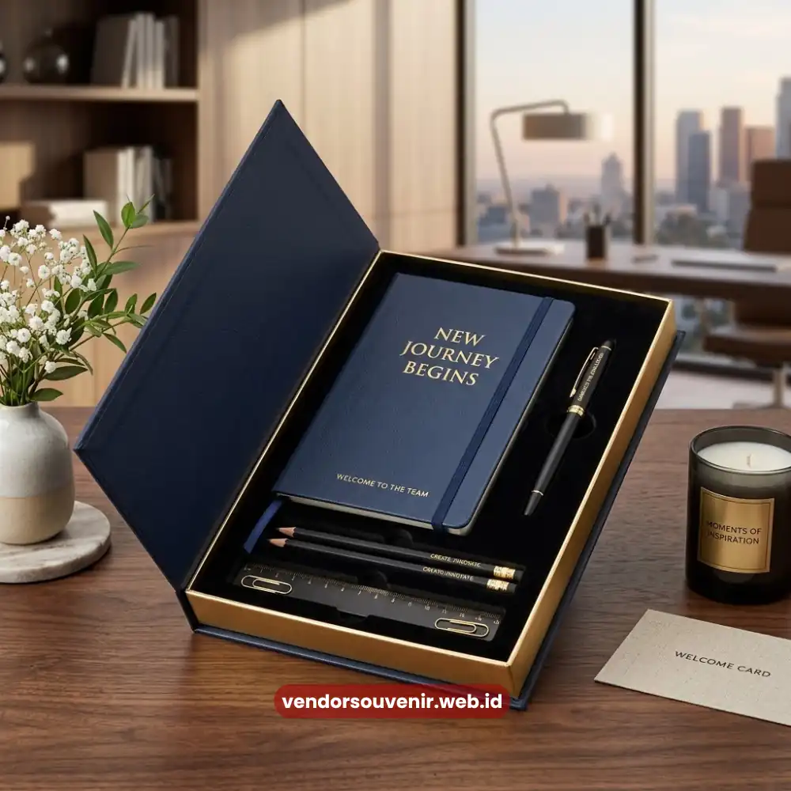

Daftar Isi
Isi welcome kit karyawan baru yang ideal umumnya mencakup tiga kategori utama, yaitu alat kerja fungsional, identitas visual perusahaan, dan sentuhan personal.
Kombinasi ketiganya membuat karyawan baru langsung memiliki perlengkapan siap pakai sekaligus merasakan kehangatan sambutan perusahaan.
Menyusun isi welcome kit secara tepat akan memastikan paket tersebut benar-benar bermanfaat, bukan sekadar formalitas seremonial.
- Isi welcome kit sebaiknya mencakup alat kerja, identitas perusahaan, dan sentuhan personal.
- Barang fungsional memberikan nilai guna jangka panjang bagi karyawan baru.
- Kualitas bahan dan kerapian kemasan memengaruhi persepsi profesionalisme perusahaan.
- Penyesuaian isi kit berdasarkan posisi kerja dapat meningkatkan relevansi paket.
Apa Saja Komponen Utama dalam Isi Welcome Kit Karyawan Baru?
Komponen utama welcome kit karyawan baru biasanya terdiri dari alat tulis, media penyimpanan data, botol minum atau tumbler, serta dokumen pendukung onboarding.
Dokumen ini bisa berupa kartu identitas sementara atau lembar informasi perusahaan.
Alat tulis seperti notebook dan pulpen menjadi item yang paling sering hadir karena kebutuhannya yang universal.
Baik di jenis pekerjaan kantor maupun lapangan, kebutuhan ini hampir selalu ada.
Selain alat tulis, tumbler atau botol minum branding juga kerap dijadikan item andalan.
Penggunaannya yang rutin setiap hari, baik di lingkungan kantor maupun saat karyawan bepergian, membuatnya sangat berguna.
Barang dengan frekuensi pemakaian tinggi seperti ini secara tidak langsung memperpanjang durasi eksposur logo dan identitas visual perusahaan di mata karyawan maupun orang-orang di sekitarnya.
Mengapa Alat Kerja Fungsional Penting Dimasukkan ke Welcome Kit?
Alat kerja fungsional penting dimasukkan karena langsung menjawab kebutuhan operasional karyawan baru di hari-hari awal bekerja.
Item seperti tas laptop, mousepad, flashdisk, hingga power bank membantu karyawan lebih siap secara teknis.
Mereka tidak perlu lagi membeli perlengkapan tambahan secara mandiri.
Pendekatan ini juga memberikan sinyal bahwa perusahaan memperhatikan kenyamanan kerja karyawan sejak awal.
Perusahaan tidak hanya berfokus pada aspek administratif semata.
Karyawan yang merasa didukung secara praktis cenderung lebih cepat fokus menyelesaikan tugas.
Dibandingkan karyawan yang harus repot mempersiapkan kebutuhan dasar sendiri.
Bagaimana Peran Identitas Visual Perusahaan dalam Isi Welcome Kit?
Identitas visual seperti logo, warna korporat, dan tagline perusahaan yang tercetak pada setiap item welcome kit sangat penting.
Elemen ini berperan dalam memperkuat rasa memiliki karyawan terhadap organisasi.
Konsistensi visual ini juga membantu karyawan baru lebih cepat mengenali dan menghafal identitas brand tempat mereka bekerja.
Hal ini sangat krusial terutama bagi perusahaan dengan banyak lini bisnis atau anak perusahaan.
Selain aspek internal, identitas visual pada barang-barang yang dibawa keluar kantor juga memiliki fungsi lain.
Barang seperti tumbler atau tas turut berfungsi sebagai media promosi tidak langsung ketika karyawan menggunakannya di ruang publik.

Kombinasi Alat Tulis dan Notebook Branding
Apakah Sentuhan Personal Perlu Ditambahkan ke Welcome Kit Karyawan Baru?
Sentuhan personal sangat disarankan untuk ditambahkan karena mampu menciptakan kesan yang lebih hangat dan tidak kaku.
Contoh sentuhan personal antara lain kartu ucapan selamat bergabung yang ditandatangani atasan langsung.
Nama karyawan yang dicetak pada salah satu item, atau paket kudapan ringan sebagai pelengkap juga merupakan opsi yang baik.
Detail-detail kecil semacam ini kerap menjadi bagian yang paling diingat oleh karyawan baru.
Hal ini menunjukkan bahwa perusahaan tidak hanya memandang mereka sebagai nomor pegawai.
Melainkan sebagai individu yang disambut secara personal.
Bagaimana Menyesuaikan Isi Welcome Kit dengan Posisi dan Divisi Kerja?
Penyesuaian isi welcome kit berdasarkan posisi kerja dapat meningkatkan relevansi dan nilai guna paket tersebut.
Karyawan di divisi lapangan misalnya lebih membutuhkan perlengkapan seperti tumbler tahan lama dan tas multifungsi.
Sementara karyawan di divisi kreatif atau digital cenderung lebih terbantu dengan aksesori teknologi seperti power bank dan flashdisk.
Untuk posisi manajerial, perusahaan dapat mempertimbangkan paket dengan kualitas bahan yang lebih premium.
Ini adalah bentuk penghormatan terhadap tanggung jawab yang diemban, tanpa mengurangi kesetaraan penghargaan bagi seluruh karyawan baru secara umum.
Menyusun isi welcome kit karyawan baru yang tepat memerlukan keseimbangan antara fungsi praktis, identitas visual perusahaan, dan sentuhan personal.
Paket yang disusun dengan cermat akan memberikan manfaat jangka panjang bagi kenyamanan kerja dan citra perusahaan.

Susun Isi Welcome Kit Karyawan yang Sempurna!
Kami siap membantu Anda memilih kombinasi item fungsional dan berkesan untuk paket onboarding perusahaan Anda.
Jadikan hari pertama karyawan baru lebih spesial dengan merchandise premium custom logo.
Dapatkan katalog dan simulasi harga secara gratis!
FAQ Seputar Isi Welcome Kit Karyawan Baru
Apa saja isi welcome kit karyawan baru yang paling umum digunakan?
Isi yang paling umum mencakup notebook, alat tulis, tumbler branding, flashdisk, serta dokumen atau kartu ucapan selamat bergabung dari perusahaan.
Apakah isi welcome kit harus sama untuk semua karyawan baru?
Tidak selalu. Isi welcome kit dapat disesuaikan dengan posisi, divisi, atau kebutuhan kerja masing-masing karyawan baru selama tetap konsisten dari sisi identitas visual perusahaan.
Apakah welcome kit perlu menyertakan dokumen onboarding di dalamnya?
Sangat disarankan, karena dokumen seperti panduan singkat perusahaan atau informasi kontak penting dapat membantu karyawan baru beradaptasi lebih cepat pada hari pertama kerja.
Perencanaan isi welcome kit yang teliti adalah wujud nyata apresiasi perusahaan yang berdampak besar bagi motivasi kerja karyawan baru.
Maroon Souvenir
Partner Corporate Gift terpercaya di Indonesia. Berpengalaman melayani ratusan perusahaan sejak 2018.
Lihat Portofolio Kami